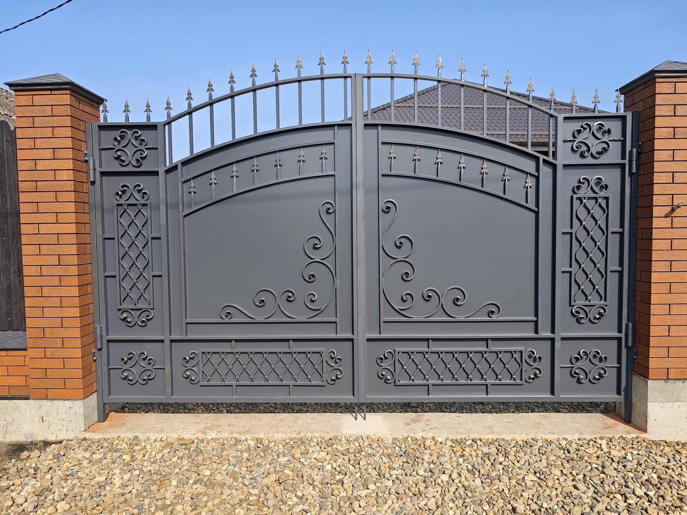

КУЗНЕЧНО · КраснодарВорота, навесы
Ворота, навесы
и ограждения.
Изготавливаем металлоконструкции для дома и участка в Краснодаре. Обсудим размеры, рисунок и отделку вашего изделия.
Рассчитать изделие
ПРИМЕРЫ РЕШЕНИЙПосмотрите работы
Посмотрите работы
из металла.
Ворота, лестничные ограждения и наружные конструкции. Выберите близкий вариант и обсудите с нами размеры, рисунок и установку.
Обсудить изделие